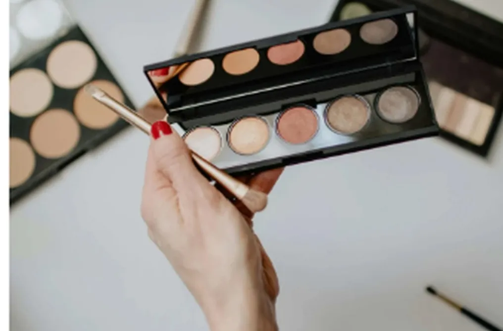
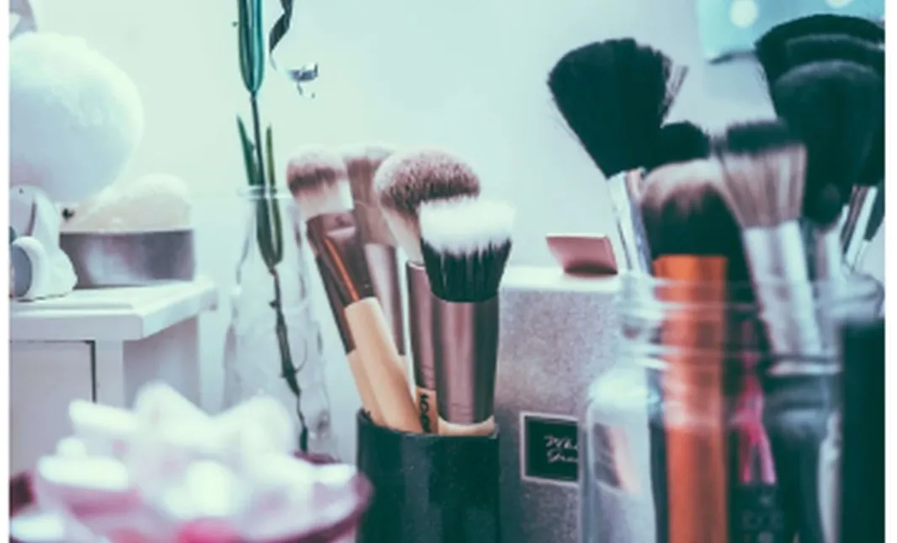

Florè Cosméticos | Sobre a Florè
Bem-vinda à Florè Cosméticos, onde a beleza encontra a paixão e a criatividade vira arte. Nossa jornada começou com a visão de três pessoas incríveis: Devin, Channing e Jies. Unidas pelo amor por cosméticos e pelo sonho de ajudar cada pessoa a abraçar a sua beleza única, nasceu a Florè.
Nossa História
Devin, a pioneira do trio, sempre teve olhar para o extraordinário. De experimentar cores na infância a dominar a arte da maquiagem, a criatividade dela não tem limites. Com o dom de transformar rostos em telas de autoexpressão, Devin é a alma artística da Florè.
Channing, a visionária, traz uma bagagem enorme do mercado de beleza. Depois de trabalhar com marcas renomadas, percebeu a falta de produtos que celebrassem a diversidade e a inclusão. A Florè virou a tela onde ela uniu experiência e inovação, criando uma marca para todos os tons de pele, estilos e personalidades.
Jies, o coração da operação, tem um compromisso inabalável com a beleza sustentável e livre de crueldade. Defensora de práticas responsáveis na indústria, ela garante que a Florè realce a sua beleza natural com consciência.
Juntas, Devin, Channing e Jies embarcaram na missão de redefinir padrões de beleza e criar um espaço onde todo mundo se sinta visto, ouvido e celebrado. A Florè é mais que uma marca: é um movimento que incentiva o amor-próprio, abraça a diversidade e estimula a criatividade.
No que acreditamos

Na Florè, acreditamos que beleza não é tamanho único. Nossos produtos são desenvolvidos com cuidado para atender a diferentes estilos, idades e culturas. De paletas de sombra vibrantes que despertam a imaginação a skincare que cuida da sua pele, cada produto conta uma história de paixão, inclusão e autenticidade.
#RevelaSuaBeleza

Venha com a gente nessa aventura e explore o mundo Florè. Deixe sua beleza brilhar e conte sua história pela arte da maquiagem. Bem-vinda a uma comunidade onde todo mundo é bonito e a beleza não tem fronteiras.